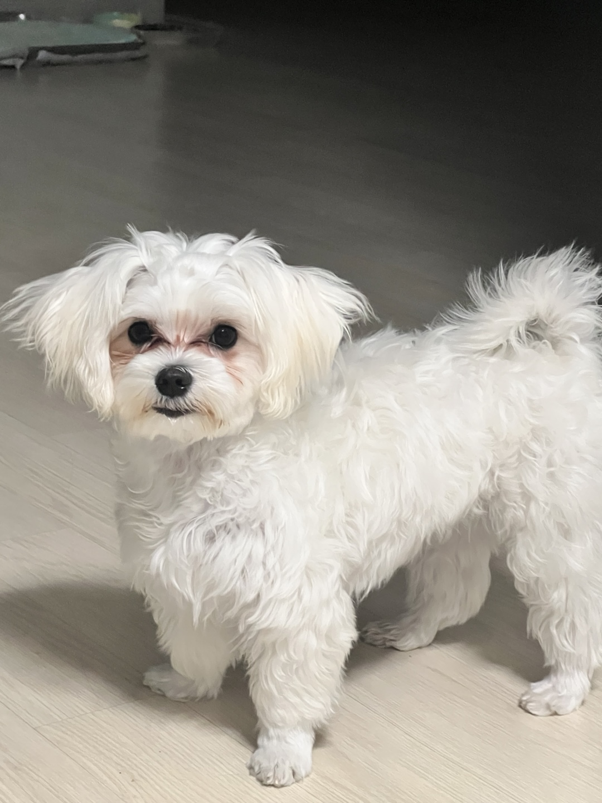

내 인생 동반자


안녕하세요, 저는 코기에요. 새로운 도전과 성장을 추구하는 여정을 즐기며, 그 과정에서 얻은 경험을 다른 사람들과 나누는 것에 가치를 두고 있어요. 안정된 일상에서 벗어나 몇 번의 큰 변화를 겪으면서 더 나은 나를 향해 나아가고 있답니다. 하루하루 작은 성취를 이루면서 더 큰 꿈을 향해 나아가는 기쁨을 느끼고 있어요. 함께 도전하고, 성장하며 서로에게 영감을 주는 여정을 만들고 싶어요.
"귀멸의 칼날: 무한 열차"는 일본 애니메이션 영화로, 원작 만화 "귀멸의 칼날"을 바탕으로 한 작품이에요. 이 영화는 주인공 탄지로와 그의 동료들이 '무한 열차'라는 기차에서 벌어지는 악의 세력과의 싸움을 그립니다. 특히, 신비로운 인물인 렌고쿠 쿄주로가 중요한 역할을 하며, 감정적인 깊이와 화려한 액션 씬이 돋보입니다. 영화는 탄지로와 그의 동료들이 성장하는 모습을 그리고, 관객에게 강한 감동을 주죠. 무한 열차의 이야기에서 보여주는 인내와 희생, 그리고 가족을 위한 사랑은 많은 이들에게 큰 영향을 미쳤습니다.
영화에서 "어른 제국"은 어른들이 어린 시절의 자신으로 돌아가고 싶은 욕망에 의해 만들어진 조직입니다. 이는 현대 사회에서 많은 어른들이 일상의 스트레스와 경쟁, 그리고 삶의 중압감을 느끼면서 잃어버린 순수함이나 자유로움을 되찾고 싶어 한다는 점을 풍자합니다. "어른 제국"은 어린이처럼 다시 순수해지려는 욕망을 가진 어른들이 등장하지만, 결국 그들은 자신들의 행동이 아이들을 불행하게 만든다는 사실을 깨닫게 됩니다. 이는 현대 사회에서 어른들이 너무 많은 경쟁과 물질적 가치에 집착하며, 중요한 감정적, 인간적인 면을 소홀히 하고 있음을 비판하는 메시지를 담고 있습니다.